Maix-III AXera-Pi 系统基础使用
基于上文的烧录系统后，本文介绍使用 Maix-III AXera-Pi 开发板的系统基础使用方法。
准备工作
- 操作前，先把 网线 路由器 准备好，插入 SD 卡上电测试。
- 开机时按住 USR 键后上电，系统在 20 秒左右将屏幕会亮起，此时屏幕会显示摄像头画面，可用人眼测试屏幕与摄像头。
- 这时灯光会开始闪烁，等待 WIFI 和 以太网的连接，如果两个都获得 IP 则灯光会灭。
- 松开按键灯光会全亮，并播放一段测试音频，此时进入录音回放模式，用纸巾刮蹭测试左右声道有效（要调低音量防止过大噪声），此时再按一下按键摄像头画面会停止，灯光会全灭。
- 我们烧录的是 debian11 系统，常用软件都可以通过 apt 去获取。
- 系统用户和密码:
root / root
如果出现异常现象的话请查询常见问题
CPU RAM 压测
sudo apt-get install stress 安装 stress 软件，现已预置。
sudo stress -c 2 -t 10000 执行 CPU 压力测试。2代表核数 10000代表时间
查看系统信息使用 htop 即可
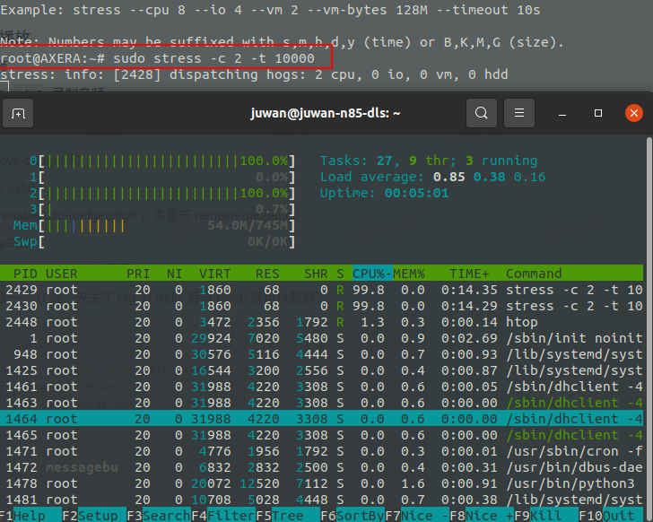
sudo apt install memtester DDR RAM 测试需要安装一下。
格式: memtester 内存数量 次数 比如测试 512M 使用 memtester 512M & 挂后台循环测试。
juwan@juwan-n85-dls:~$ memtester 8M
memtester version 4.3.0 (64-bit)
Copyright (C) 2001-2012 Charles Cazabon.
Licensed under the GNU General Public License version 2 (only).
pagesize is 4096
pagesizemask is 0xfffffffffffff000
want 8MB (8388608 bytes)
got 8MB (8388608 bytes), trying mlock ...locked.
Loop 1:
Stuck Address : ok
Random Value : ok
Compare XOR : ok
Compare SUB : ok
Compare MUL : ok
Compare DIV : ok
Compare OR : ok
Compare AND : ok
Sequential Increment: ok
Solid Bits : ok
Block Sequential : ok
Checkerboard : ok
Bit Spread : ok
Bit Flip : ok
Walking Ones : ok
Walking Zeroes : ok
8-bit Writes : ok
16-bit Writes : ok
Loop 2:
Stuck Address : ok
Random Value : ok
Compare XOR : ok
Compare SUB : ok
Compare MUL : ok
Compare DIV : ok
Compare OR : ok
Compare AND : ok
Sequential Increment: ok
Solid Bits : ok
Block Sequential : ok
Checkerboard : ok
Bit Spread : ok
Bit Flip : ok
Walking Ones : ok
Walking Zeroes : ok
8-bit Writes : ok
16-bit Writes : ok
EMMC
在 sd 卡启动的系统里它被当做磁盘使用，可以对它进行分区，创建文件系统。
#相关命令记录
fdisk /dev/mmcblk0 #然后 n p p w 默认创建一个分区 /dev/mmcblk0p1 。
mkfs.ext4 /dev/mmcblk0p1
mount /dev/mmcblk0p1 /mnt/
dd bs=1M count=128 if=/dev/zero of=/mnt/test conv=fdatasync
fdisk 命令参数
p 打印分区列表
n 新建一个分区
d 删除一个分区
回车 使用默认数据输入
q 退出不保存
w 把分区写进分区表，保存并退出
音频录音与播放
录音驱动采用 alsa 标准音频驱动，与上层保持一致，内置的 wav 文件。
- 测试脚本
speaker-test -t sine -f 440 -c1 - 播放音频
aplay test.wav - 录制音频
arecord test.wav -c 2 -d 2 - 录音回放 的 python3 代码如下：
import pyaudio
try:
chunk = 1024 # Each chunk will consist of 1024 samples
sample_format = pyaudio.paInt16 # 16 bits per sample
channels = 2 # Number of audio channels
fs = 44100 # Record at 44100 samples per second
time_in_seconds = 30
p = pyaudio.PyAudio()
stream = p.open(format=sample_format,
channels = channels,
rate = fs,
frames_per_buffer = chunk,
input = True, output = True)
# Store data in chunks for 3 seconds
for i in range(0, int(fs / chunk * time_in_seconds)):
data = stream.read(chunk)
stream.write(data)
finally:
# Stop and close the Stream and PyAudio
stream.stop_stream()
stream.close()
p.terminate()
配置命令 alsamixer
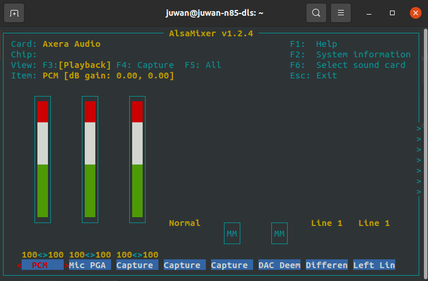
网卡相关操作
系统里面有回环(lo)、以太网(eth0)、RNDIS（usb0）、wifi-rtl8723bs(wlan0) 等网卡。
目前的网络信息配置参考：
root@AXERA:~# cat /etc/network/interfaces
# interfaces(5) file used by ifup(8) and ifdown(8)
# Include files from /etc/network/interfaces.d:
source /etc/network/interfaces.d/*
auto lo
iface lo inet loopback
# auto eth0
allow-hotplug eth0
iface eth0 inet dhcp
# auto usb0
allow-hotplug usb0
iface usb0 inet static
address 192.168.233.1
netmask 255.255.255.0
# allow-hotplug wlan0
# wpa-ssid "dalaoshu"
# wpa-psk "junhuanchen"
auto wlan0
iface wlan0 inet manual
wpa-conf /etc/wpa_supplicant/wpa_supplicant.conf
iface wlan0 inet dhcp
ifconfig 查看所有网卡信息
root@AXERA:~# ifconfig
eth0: flags=4163<UP,BROADCAST,RUNNING,MULTICAST> mtu 1500
inet 192.168.0.77 netmask 255.255.255.0 broadcast 192.168.0.255
ether 1e:09:dc:e9:1c:29 txqueuelen 1000 (Ethernet)
RX packets 301 bytes 41433 (40.4 KiB)
RX errors 0 dropped 0 overruns 0 frame 0
TX packets 31 bytes 2970 (2.9 KiB)
TX errors 0 dropped 0 overruns 0 carrier 0 collisions 0
device interrupt 56
lo: flags=73<UP,LOOPBACK,RUNNING> mtu 65536
inet 127.0.0.1 netmask 255.0.0.0
loop txqueuelen 1000 (Local Loopback)
RX packets 16 bytes 1064 (1.0 KiB)
RX errors 0 dropped 0 overruns 0 frame 0
TX packets 16 bytes 1064 (1.0 KiB)
TX errors 0 dropped 0 overruns 0 carrier 0 collisions 0
usb0: flags=4163<UP,BROADCAST,RUNNING,MULTICAST> mtu 1500
inet 192.168.233.1 netmask 255.255.255.0 broadcast 192.168.233.255
ether 02:da:9b:e4:a8:7f txqueuelen 1000 (Ethernet)
RX packets 121 bytes 15220 (14.8 KiB)
RX errors 0 dropped 15 overruns 0 frame 0
TX packets 35 bytes 7258 (7.0 KiB)
TX errors 0 dropped 0 overruns 0 carrier 0 collisions 0
wlan0: flags=4163<UP,BROADCAST,RUNNING,MULTICAST> mtu 1500
inet 192.168.0.112 netmask 255.255.255.0 broadcast 192.168.0.255
ether 0c:cf:89:32:c5:c0 txqueuelen 1000 (Ethernet)
RX packets 950 bytes 154305 (150.6 KiB)
RX errors 0 dropped 950 overruns 0 frame 0
TX packets 5 bytes 1398 (1.3 KiB)
TX errors 0 dropped 0 overruns 0 carrier 0 collisions 0
ifup eth0 启动 eth0 网卡
ifdown eth0 --force 强制关闭 eth0 网卡
WIFI 账号密码存放在 wpa_supplicant.conf 里。
root@AXERA:~# cat /etc/wpa_supplicant/wpa_supplicant.conf
ctrl_interface=DIR=/var/run/wpa_supplicant GROUP=netdev
update_config=1
network={
ssid="Sipeed_Guest"
key_mgmt=WPA-PSK
psk="qwert123"
}
usb0 网卡 rndis 驱动安装参考这篇 Ghost系列USB网卡（RNDIS) 使用教程，其中在 win10 则如下图。
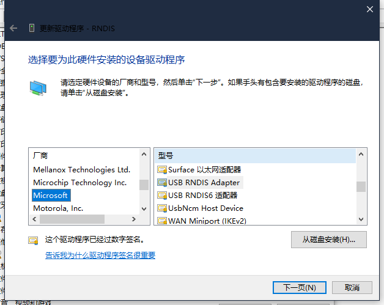 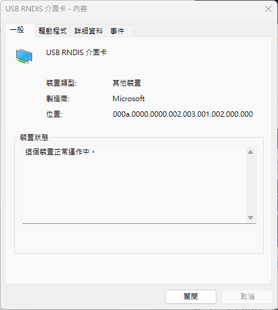连接方法看 USB 相关操作：USB 网卡会自动 DHCP 配置，直接连接 192.168.233.1 即可。
USB 相关操作
在 debian 系统上配置了 usb-gadget@g1 和 usb-gadget@g0 两个服务。
如何配置虚拟网卡 RNDIS usb0
默认就会启动配置 systemctl enable usb-gadget@g0，停止开机启动用 systemctl disable usb-gadget@g0，停止服务用 systemctl stop usb-gadget@g0。
使用 sshpass -p root ssh root@192.168.233.1 即可连接，账号密码都是 root 。
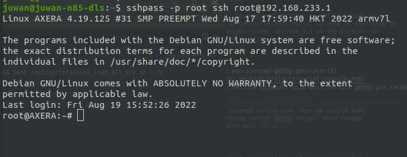
如何配置虚拟串口 /dev/ttyGS0 并使用
停止 usb-gadget@g0 后使用 systemctl start usb-gadget@g1 即可看到 。
然后使用 systemctl start getty@ttyGS0 即可转发串口终端到 usb 的虚拟串口上。
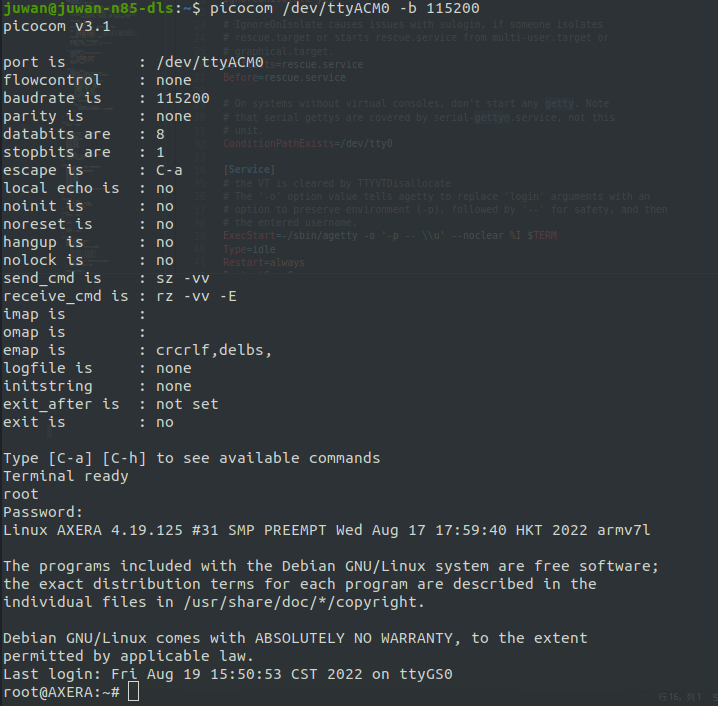
使用 USB HOST 读取一个 256M 的 SD 卡
先关了 otg 的 rndis 后再 lsusb 就可以看到了。
root@AXERA:~# systemctl stop usb-gadget@g0
root@AXERA:~# lsusb
Bus 002 Device 001: ID 1d6b:0003 Linux Foundation 3.0 root hub
Bus 001 Device 002: ID 067b:2731 Prolific Technology, Inc. USB SD Card Reader
Bus 001 Device 001: ID 1d6b:0002 Linux Foundation 2.0 root hub
root@AXERA:~# fdisk -l
Disk /dev/mmcblk2: 58.94 GiB, 63281561600 bytes, 123596800 sectors
Units: sectors of 1 * 512 = 512 bytes
Sector size (logical/physical): 512 bytes / 512 bytes
I/O size (minimum/optimal): 512 bytes / 512 bytes
Disklabel type: dos
Disk identifier: 0x32eb5429
Device Boot Start End Sectors Size Id Type
/dev/mmcblk2p1 * 2048 264191 262144 128M c W95 FAT32 (LBA)
/dev/mmcblk2p2 264192 123596799 123332608 58.8G 83 Linux
Disk /dev/sda: 240 MiB, 251658240 bytes, 491520 sectors
Disk model: SD Card Reader
Units: sectors of 1 * 512 = 512 bytes
Sector size (logical/physical): 512 bytes / 512 bytes
I/O size (minimum/optimal): 512 bytes / 512 bytes
Disklabel type: dos
Disk identifier: 0x0607cfd2
Device Boot Start End Sectors Size Id Type
/dev/sda1 * 240 490239 490000 239.3M e W95 FAT16 (LBA)
root@AXERA:~#
NPU 相关操作
点击获取文件
把文件放进系统里 /opt/bin/run_joint resnet50.joint --repeat 100 &重复运行 100 次测试 npu 模型功能。
测试屏幕驱动
/opt/bin/sample_vo -v dsi0@480x360@60 -m 0 屏幕会显示彩条。
新增 fb 设备支持
- 先使用
/opt/bin/sample_vo_fb &绑定 fb0 设备，如果使用 libdrm 则需要killall ample_vo_fb，解除 vo 的占用。 - 再使用
/home/fbv-1.0b/fbv /home/examples/480x360.jpg显示图像。
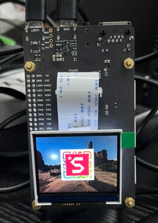
- 使用
wget https://picsum.photos/200/300即可获取想要的图像（如分辨率 200x300）。
内置 AI 应用
现在默认终端不是 dash 而是 bash 了，使用 sudo dpkg-reconfigure dash 切换。
要有以太网 IP 才能启动。
IPCDEMO 人脸识别 车牌识别
介绍：
获取方式：
效果：
使用流程
- 在浏览器上打开 http://192.168.0.147:8080 这是以太网的 IP ，也可以通过 usb 访问 192.168.233.1 这个 IP 。
[1660898353.438209] [ IVPS][ Start] CStage::Start ---
[1660898353.438257] [ Camera][ Start] [0][0] +++
[1660898353.438269] [ IVPS][ ProcessFrameThreadFunc] +++
[1660898353.438542] [ Camera][ ItpLoopThreadFunc] [0] +++
[1660898353.489382] [ Camera][ Start] [0][0] ---
[1660898353.490782] [HOTBALANCE][ Start] +++
[1660898353.490975] [HOTBALANCE][ Start] HotBalance monitor start: (M:105.00,L:90.
00,Gap:0.00,level:1)
[1660898353.492605] [HOTBALANCE][ APP_EnterNormalMode] Clk works to mid mode
[1660898353.493132] [HOTBALANCE][ Start] ---
[1660898353.594197] [ MAIN][ main] Preview the video using URL: <<<<< http:/
/192.168.0.147:8080 >>>>>n
- 访问上面的 IP 地址后会弹出以下页面，直接登录即可。
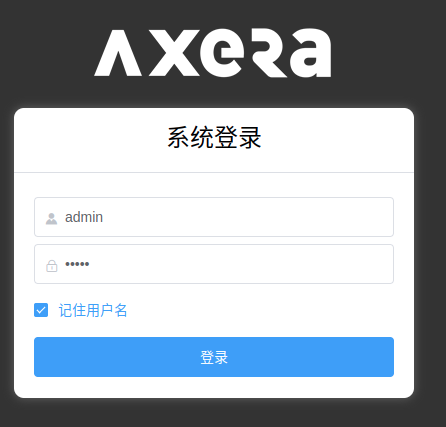
3. 登录后会出现图像(待补充)
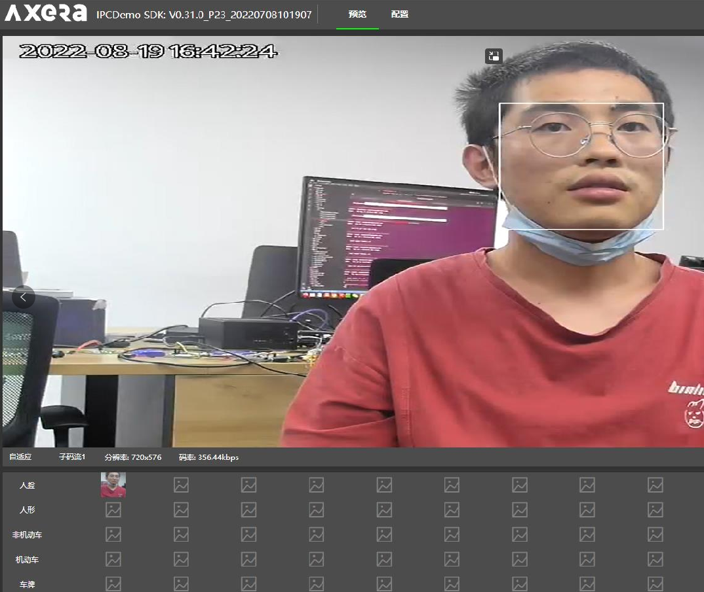
SKEDEMO 人体姿态检测
介绍：
获取方式：
效果：
摄像头直显屏幕
设置 RTC 時間方法
- 查看时间
cat /sys/class/rtc/rtc0/time && cat /sys/class/rtc/rtc0/date
root@AXERA:~# cat /sys/class/rtc/rtc0/time && cat /sys/class/rtc/rtc0/date
08:13:30
2022-08-19
- 設置时间 hwclock -w -f /dev/rtc0 只要这个方法可以写进去。
- 确认 RTC 是否写入成功，只需要断电后重启的时间不为 1970 就行。
GPIO 操作示意
对于 AX 的芯片，只需要参考这份配好的引脚图（pinmux）即可。
点击查看引脚图
读取 KEY 按键
读取 KEY 按键输入：GPIO0 30
echo 30 > /sys/class/gpio/export
echo in > /sys/class/gpio/gpio30/direction
cat /sys/class/gpio/gpio30/value
点亮 LED 灯
GPIO2 A4 == 68 A5 69
echo 68 > /sys/class/gpio/export
echo out > /sys/class/gpio/gpio68/direction
echo 1 > /sys/class/gpio/gpio68/value
sleep 1
echo 0 > /sys/class/gpio/gpio68/value
sleep 1
echo 1 > /sys/class/gpio/gpio68/value
计算规则 GPIO2 A4 == 32 * 2 + 4 = 68
对于爱芯的芯片，GPIO0 和 GPIO2 对应 A 和 C ，此处 A4 不代表 GPIO2 只是序号。
也就是 GPIO2 A4 在标准设备中的定义为 GPIO C(2) 4(A4) 同理 GPIOA0 对应 GPIO0A4。
所以现在统一到 PA0 或 PC4 这类定义，方便后续使用。
I2C 操作示意
root@AXERA:~# i2cdetect -y -r 0
0 1 2 3 4 5 6 7 8 9 a b c d e f
00: -- -- -- -- -- -- -- --
10: -- -- -- -- -- -- -- -- -- -- -- -- -- -- -- --
20: -- 21 -- -- -- -- -- -- -- -- -- -- -- -- -- --
30: -- -- -- -- -- -- 36 -- -- -- -- -- -- -- -- --
40: -- -- -- -- -- -- -- -- -- -- -- -- -- -- -- --
50: -- -- -- -- -- -- -- -- -- -- -- -- -- -- -- --
60: -- -- -- -- -- -- -- -- -- -- -- -- -- -- -- --
70: -- -- -- -- -- -- -- --
root@AXERA:~#
与其他芯片同理
PWM 操作示意
以 pwm1 示意，pwm0 被锁在屏幕背光了，目前在系统上还没有开 debugfs 或 sysfs 接口去控制。
echo 1 > /sys/class/pwm/pwmchip0/export
echo 4167 > /sys/class/pwm/pwmchip0/pwm1/period
echo 2084 > /sys/class/pwm/pwmchip0/pwm1/duty_cycle
echo 1 > /sys/class/pwm/pwmchip0/pwm1/enable
UART 操作示意
里面默认是 ttyS0 ，排针上的是 ttyS1 ，虚拟串口是 ttyGS0
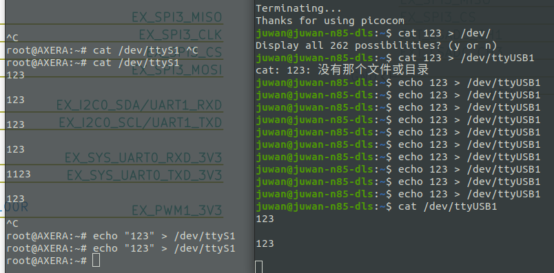
SPI 操作示意
要更新 uboot 和 内核
点击查询
获取 spidev:
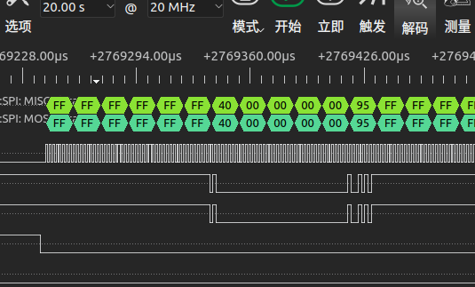
root@AXERA:~# ./spidev_test -D /dev/spidev1.0 -v
spi mode: 0x0
bits per word: 8
max speed: 500000 Hz (500 KHz)
TX | FF FF FF FF FF FF 40 00 00 00 00 95 FF FF FF FF FF FF FF FF FF FF FF FF FF FF FF FF FF FF F0 0D | ......@....�..................�.
RX | FF FF FF FF FF FF 40 00 00 00 00 95 FF FF FF FF FF FF FF FF FF FF FF FF FF FF FF FF FF FF F0 0D | ......@....�..................�.
root@AXERA:~# ./spidev_test -D /dev/spidev1.0 -v
spi mode: 0x0
bits per word: 8
max speed: 500000 Hz (500 KHz)
TX | FF FF FF FF FF FF 40 00 00 00 00 95 FF FF FF FF FF FF FF FF FF FF FF FF FF FF FF FF FF FF F0 0D | ......@....�..................�.
RX | FF FF FF FF FF FF FF FF FF FF FF FF FF FF FF FF FF FF FF FF FF FF FF FF FF FF FF FF FF FF FF FF | ................................
root@AXERA:~# ./spidev_test -D /dev/spidev1.0 -v
spi mode: 0x0
bits per word: 8
max speed: 500000 Hz (500 KHz)
TX | FF FF FF FF FF FF 40 00 00 00 00 95 FF FF FF FF FF FF FF FF FF FF FF FF FF FF FF FF FF FF F0 0D | ......@....�..................�.
RX | FF FF FF FF FF FF FF FF FF FF FF FF FF FF FF FF FF FF FF FF FF FF FF FF FF FF FF FF FF FF FF FF | ................................
ADC 操作示意
参考 外围开发手册，这需要专用的代码控制，暂时没有写。
- 设置 THM 寄存器
- 中间需要 delay 一段时间，否则读取出来的值，可能不对；
- 0x2000028 寄存器读取出来的值 DATA
- DAT 和 voltage 的对应关系，voltage = DATA / 1024 * VREF(1.8V)
- 如果读取 chan1/2/3/4，需要读取 0x200002c，0x2000030，0x2000034，0x2000038
使能 ADC 通道
devmem 0x2000020 32 0x1000 //chan0
devmem 0x2000020 32 0x800 //chan1
devmem 0x2000020 32 0x400 //chan2
devmem 0x2000020 32 0x200 //chan3
devmem 0x2000020 32 0x100 //chan4
devmem 0x200002c
devmem 0x2000030
devmem 0x2000034
devmem 0x2000038